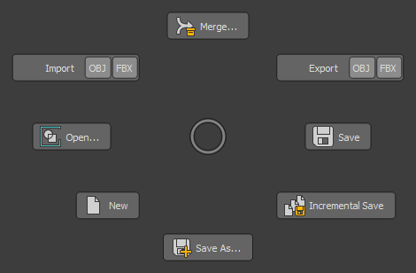

Tools / Save Pie
Save Pie
Open, save, merge, import and export from a pie on Ctrl+S.
What it does
The Save pie puts the file actions in one pie. Ctrl+S no longer saves straight away: Save is a flick to the right.

Hold Ctrl+S and flick to Save, then to Incremental Save.
How to use it
- Press Ctrl+S. A pie menu opens around the mouse. Hold the key, flick the mouse toward a button and let go to run it. You can also click a button. Esc, a right-click or a click in the centre closes the pie. If you let go of the key without moving, the pie stays open for a click.
- For Import and Export, click the format button on the row (OBJ or FBX).
Options
| Button | What it does |
|---|---|
| Merge... | Max's Merge: pick a .max file, then the objects to bring in. |
| Open... | Opens a scene file. |
| Save | Saves the scene. A star after the name means there are unsaved changes. |
| Save As... | Saves the scene under a new name. |
| New | Starts a new scene; asks to save unsaved changes. |
| Incremental Save | Saves a numbered copy (chair_004 becomes chair_005). Hold Alt for chair_004_01. It never overwrites a file. |
| Import OBJ / FBX | Imports a file of that format. |
| Export OBJ / FBX | Exports the selected objects, or the visible objects when nothing is selected (hidden objects and objects on hidden layers stay out). |
Good to know
- Hover Incremental Save to see the file name it will use.
- A USD button appears too when Max has USD import or export available.
- Max's own Save File is taken off Ctrl+S; Save is in the pie and Max's File menu still has it.